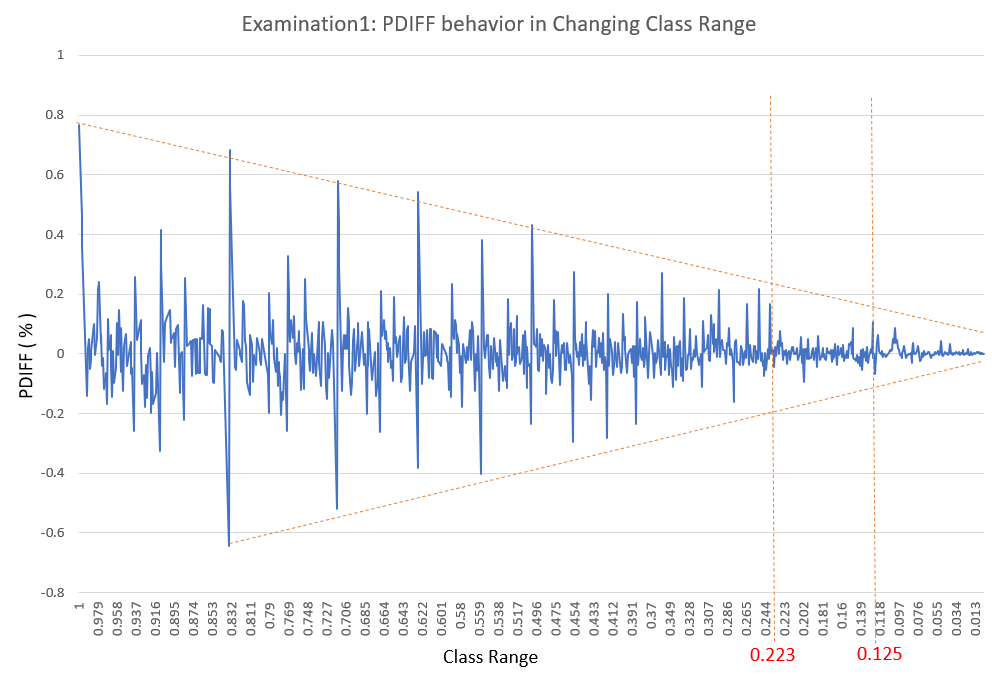
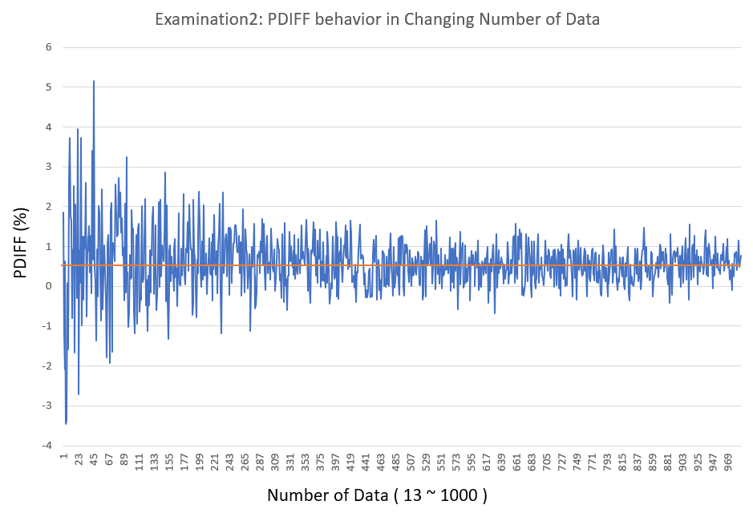

Research on Accuracy of Mean Value in Frequency Table
Contents
How to calculate Mean Value in Frequency Table
Example Data:
10, 20, 30, 45, 50, 55, 60, 65, 70, 75, 85, 90, 95
| # | Class | Class Value | Frequency | Class Value * Frequency |
|---|---|---|---|---|
| 1 | 0 ~ 20 | 10 | 1 | 10 |
| 2 | 20 ~ 40 | 30 | 2 | 60 |
| 3 | 40 ~ 60 | 50 | 3 | 150 |
| 4 | 60 ~ 80 | 70 | 4 | 280 |
| 5 | 80 ~ 100 | 90 | 3 | 270 |
| - | TOTAL | - | 13 | 770 |
| - | Mean | - | - | 59.2 |
The method to calculate Mean Value in Frequency Table is as follows.
- set Class Values.
- set Class Value * Frequency in each Class.
- take the sum of product of the Class Value and the Frequency
- divide the sum by the Total of Frequency
Difference from Actual Mean Value
However, the actual Mean Value of this data is calculated as follows.
$Mean$
$= (10 + 20 + 30 + 45 + 50 + 55 + 60 + 65 + 70 + 75 + 85 + 90 + 95) / 13$
$= 57.692307692308$
$≒ 57.7$
There's big difference.
$DIFF = 59.2 - 57.7 = 1.5$
$RATIO_{DIFF} = 1.5 / 57.7 ≒ 0.026 = 2.6\%$
Formula Deviation of Mean Value in Frequency Table
Let the Class Range be the variable $CR$.
Let the Data Range be the variable $DR$.
Let the Number of Classes be the variable $C$.
$$DR = C \times CR \; \Longleftrightarrow \; CR = \frac{DR}{C} \; \Longleftrightarrow \; C = \frac{DR}{CR}$$
Let the Class Value of $k$ th Class be $CV(k) ( 1 \leq k \leq C)$.
$$CV(k) = \frac{CR}{2} + CR \times (k - 1) = (k - \frac{1}{2})CR$$
Let the Frequency of $k$ th Class be $F(k) ( 1 \leq k \leq C)$.
Product of Class Value and Frequency of $k$ th Class is:
$$CV(k) \times F(k) = (k - \frac{1}{2})CR \times F(k)$$
Let the sum of these products be the variable $S$.
$$S = \sum^{C}_{k=1}\{(k - \frac{1}{2})CR \times F(k)\} = CR\{\sum^{C}_{k=1}k - \frac{1}{2}\sum^{C}_{k=1}F(k)\}$$
Let the Total of Frequency be the variable $T$.
$$T = \sum^{C}_{k=1}F(k)$$
And,
$$\sum^{C}_{k=1}k = \frac{C(C + 1)}{2}$$
Then,
$$S = CR\{\frac{C(C + 1)}{2} - \frac{T}{2}\} = \frac{CR}{2}\{C(C + 1) - T\}$$
Let the Mean Value in Frequency Table be the variable $MF$.
$$MF = \frac{S}{T} = \frac{CR}{2T}\{C(C + 1) - T\}$$
Let the Number of Data be the variable $N$.
Let each data be the variable $D(k) (1 \leq k \leq N)$.
Let the Actual Mean Value be the variable $AM$.
$$AM = \frac{1}{T}\sum^{N}_{k=1}D(k)$$
Let the difference of MF and AM be the variable $DIFF$.
$$DIFF = MF - AM = \frac{1}{T}[\frac{CR}{2}\{C(C + 1) - T\} - \sum^{N}_{k=1}D(k)]$$
Let the variable $R_{DIFF}$ be the ratio of $DIFF$ to $AM$.
$$R_{DIFF} = \frac{DIFF}{AM}$$
Let the variable $P_{DIFF}$ be the percentage of $DIFF$ to $AM$.
$$P_{DIFF} = R_{DIFF} \times 100$$
$DIFF$ and $P_{DIFF}$ have complicated behavior.
Examination1: Changing Class Range
The tool used for this examination is macocci7/php-frequency-table.
And PHP Code used for this examination is Examination1_01.php
The result data file is Examination1_01.csv
Gradually change the Class Range from $1$ to $0.001$ in steps of $-0.001$.

From this graph, we can see the $P_{DIFF}$ value tends to converge to $0\%$
as the Class Value approaches $0.001$.
When the Class Value is $0.223$ or less, the $P_{DIFF}$ is mostly with in $0.1\%$.
The only exception is when the Class Value is $0.125$, where $P_{DIFF} = 0.10833333333321\%$.
Examination2: Changing Number of Data
PHP Code used for this examination is Examination2_02.php
The result data file is Examination2_02.csv
Gradually change the Number of Data from $13$ to $1,000,000$.
Data Range is fixed at $85 ( 10 ～ 95 )$. Class Range is $20$.

$P_{DIFF}$ behaves in complex ways.
However, $P_{DIFF}$ still seems to oscillate around $0.59\%$.
The Mean Value of $P_{DIFF}$ in this case is $0.585637401$.
And $P_{DIFF}$ seems to converge to $0.59\%$.
Conclusion
I have only examined two cases this time, but I can still say something,
so I will draw a conclusion here.
- Class Range Greatly affects the accuracy of Mean Value in Frequency Table.
- If you want to increase the accuracy of Mean Value in Frequency Table, you should reduce the class value.
- If doing so, however, there's no advantage of creating Frequency Table.
- Number of Data has little effect on the accuracy of Mean Value in Frequency Table.
- Mean Value in Frequency Table is only an approximation.